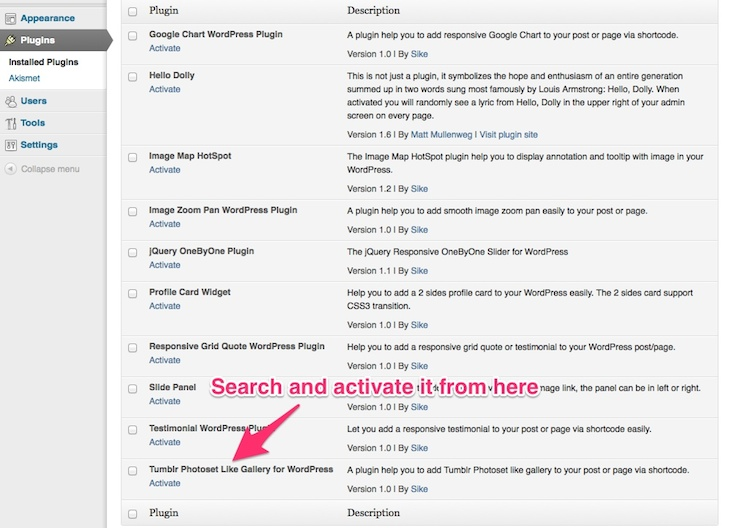
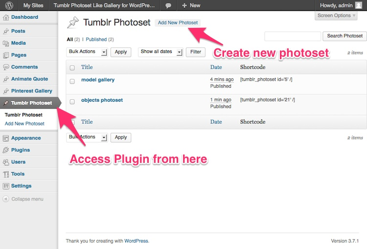
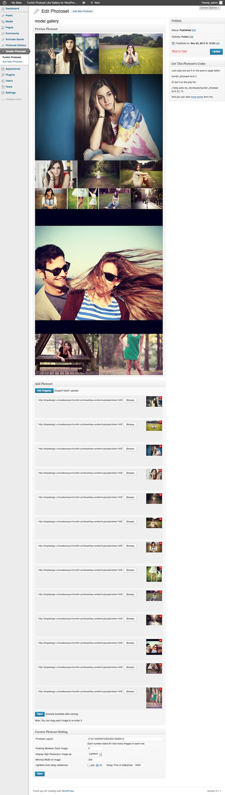

“Tumblr Photoset Like Gallery for WordPress” Documentation by “Sike”
“Tumblr Photoset Like Gallery for WordPress”
Created: 24 Nov 2013
By: Sike
Contact
Thank you for purchasing. And I appreciate if you can rate my item in the download section of codecanyon, thanks!
Table of Contents
A) Installation and Usage - top
How to install.
- Unzip and upload the folder to the /wp-content/plugins/ directory, via FTP, or upload the zip directly via WordPress's built in plugin uploader.
- Activate the plugin through the 'Plugins' menu in WordPress 
How to use the plugin.
- In the front page of this plugin, you can view the available photoset you've created. Something like below: 
- Just go to the Add New Photoset (same as the Edit) page, add your high resolution images, it support batch upload, which means you can add all your images at once.
- After save/publish the photoset, you can see the live preview. You can drag each thumbnail to re-order it. And customize current photoset's setting below. The photoset layout is a number sequence, each number stand for how many images in the row. For example, 2331 stand for 1st row has 2 images, 2nd row has 3 images, 3rd row has 3 images, and 4th row has 1 image. I've added a long sequence by default supposed you've a lot of images. When everything is ok, you can copy the shortcode and put it in your post or page via the shortcode. 
B) The source Folder - top
Contains the source code for this plugin, you can customize or add new function in the php file.
C)Credits - top
jQuery http://jquery.com
photoset-grid https://github.com/stylehatch/photoset-grid/
Great shots from http://www.flickr.com/photos/markjsebastian/
D)Features: - top
- Support batch upload, and convert the large image to small thumbnail via PHP automatically, help you to add a gallery in a minute, keep the gallry load fast too.
- Live preview in the backend, what you see is what you get.
- Flexibility layout, you can customize each row image number just via a number sequence.
- Responsive, works fine in the small screen device (like iPhone, iPad) too.
- Optional padding between each image.
- Optional lightbox or image link.
- Optional slideshow and slideshow delay.
- Multiple and unlimited photoset instance on same page.
- Compatible with latest jQuery and latest WordPress.
- Enqueue the js and css only when needed. Keep WordPress page size smaller.
- You can add/edit the chart without touching the code. Customize/update the image with WordPress backend.
- FAQ and source code are included in the package. Free update in the future.